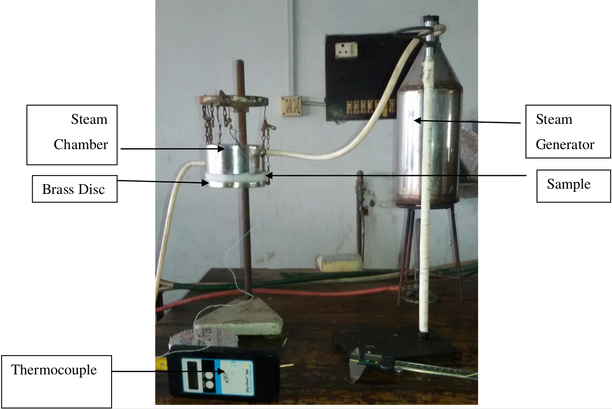
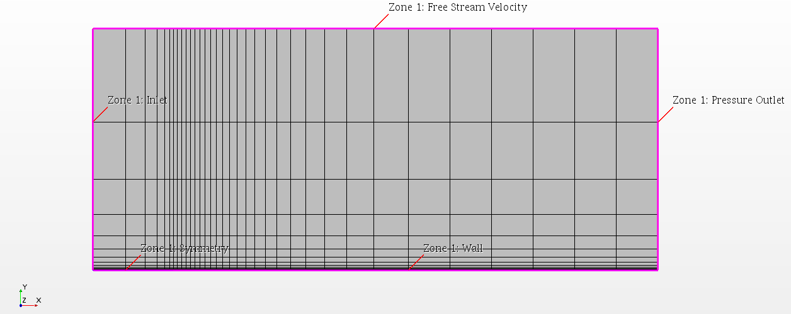
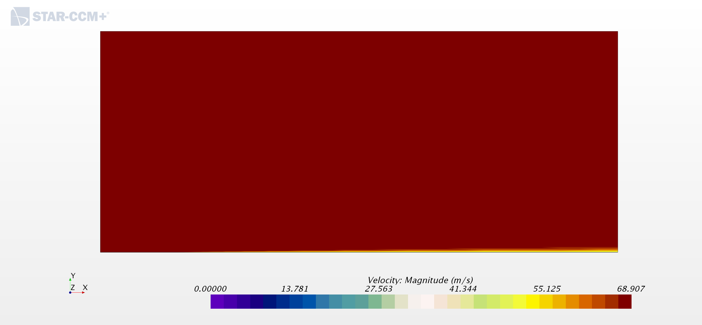
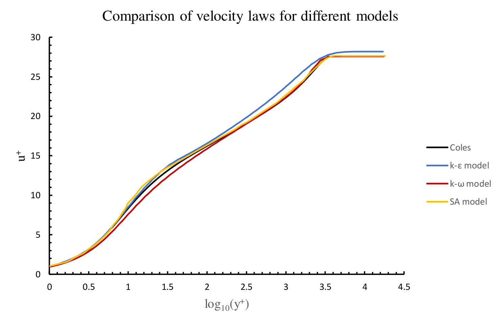
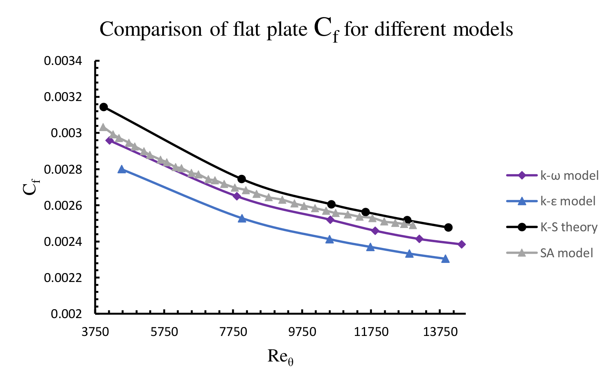

Design and construction of portable experimental setup for measuring the thermal conductivity of locally available insulating materials, BSc thesis.

Project Description: Built accurate thermal conductivity testing setup using Brass disc, thermocouple, brass steam chamber, and stainless steel steam
generator.
Findings: Measured the thermal conductivity of locally available insulating materials achieving less than 5% deviation from manufactur-
ers’ claimed values.
Automatic color-based product sorting machine, Undergraduate project.

Project Description: Developed automated color sorting machine using RGB and IR sensors, conveyor belts, servo motor,
and microcontroller.
Findings: The device successfully sorted the products based on their color, dropped them in color specific boxes.
Analysis of planar laminar and turbulent boundary layer flow with different grid and turbulence models, Graduate course project.




Project Description: Simulated a planar laminar and a planar turbulent boundary layer flow over a flat plate using 3 different Plot3D grids
35x25, 69x49, 137x97 with the three different turbulence models (e.g., k-&epsilon, k-&omega, Spalart-Allmaras). All the simulations were
performed in Star-CCM+. The statistics were compared against emperical (e.g., Blasius, Coles) results.
Findings: The statistics showed self-similarity of the solution. The influence of zero, adverse (causes backflow), and favorable (flow accelerates)
pressure gradient were observed.